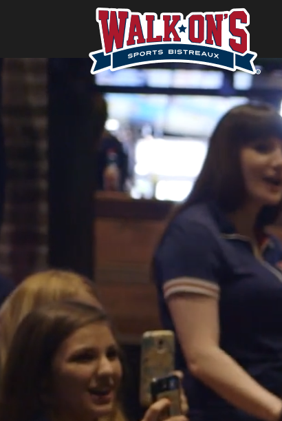
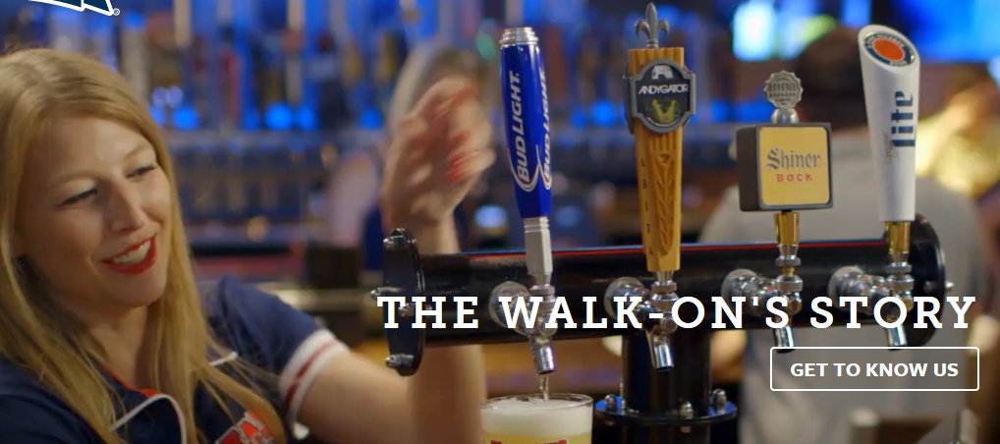

Walk-On’s Sports Bistreaux espires to provide fresh mouthwatering, Cajun cuisine to life. And whether you’re here for dinner with the family, date night, cocktails with the girls or to watch a game on the big screen, we’re always happy to share our Louisiana culture with you. check our website below to hear the Walk-ons story or just check out the menu for your drolling pleasure. Walk-ons a Proud co-sponsor of the Mardi Gras Festival.
